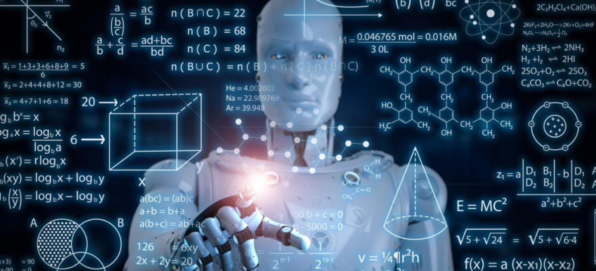

INTELIGENCIA ARTIFICIAL

Implica que un sistema de inteligencia artificial continúe haciendo la tarea tal y como se le ordenó, sin importar las veces que deba hacerlo. Ello conduce además a minimizar los errores y los costos humanos.
2. Manejo de una gran cantidad de datos
Representa uno de los aspectos más relevantes de las características de la inteligencia artificial. Los sistemas artificialmente inteligentes gestionan grandes cantidades de datos. Incluso una pequeña empresa de unos cincuenta empleados tiene enormes cantidades de datos para analizar, los cuales pueden manejarse gracias a estos sistemas. Sumado a ello, se almacena información de múltiples fuentes.
Es una de las características de la inteligencia artificial más sobresalientes. ¿El motivo? Pues, mediante estos sistemas se imita la forma en que la mente humana piensa y solventa problemas. De modo que se hacen inferencias, se interpreta el entorno y se toman decisiones (Mazurek, 2019). Es posible que no todo pueda ser idéntico; sin embargo, los desarrolladores y científicos trabajan arduamente para alcanzar plenamente esta particularidad.
4. Son futuristas
Los negocios que emplean la inteligencia artificial pueden contar con la percepción del entorno para encontrar oportunidades. Por ejemplo, un vehículo autónomo registra la velocidad de los carros cercanos e intenta ejecutar patrones similares a los encontrados en el tráfico. Mediante tecnologías como el aprendizaje automático, se pueden introducir datos en algoritmos y obtener determinado objetivo en varios escenarios.